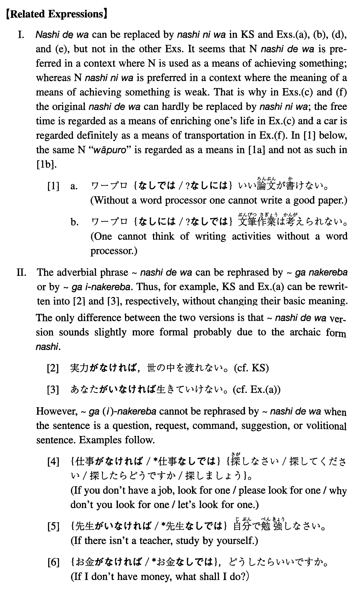

なしでは (I. 230)
- (ks).
- 実力なしでは世の中は渡れない。
- Without real talents one cannot get along in the society.
- (a).
- あなたなしでは生きていけない。
- Without you I cannot keep on living.
- (b).
- お金なしではいい教育は受けられない。
- Without money we cannot receive good education.
- (c).
- 暇なしでは人生はつまらなくなってしまう。
- Without leisure time life will become dull.
- (d).
- 仕事なしでは生活が出来ない。
- Without a job one cannot live a life.
- (e).
- 基礎研究なしでは科学は発展しない。
- Without basic research science would not develop.
- (f).
- 車なしではちょっと不便だ。
- Without a car it is a bit inconvenient.
